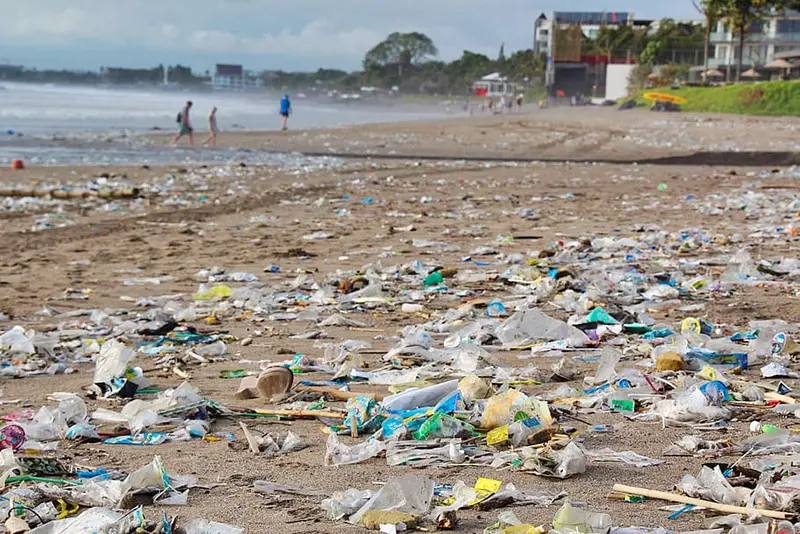
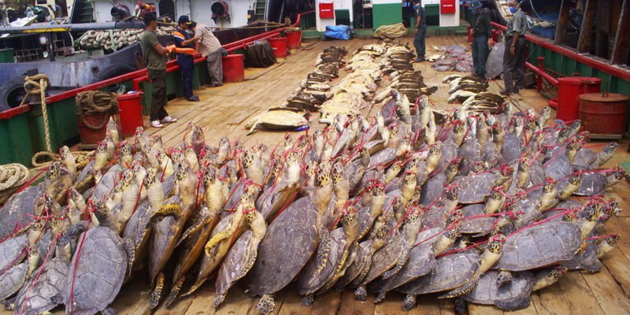

Threat 1: Pollution
- Turtle populations are seriously threatened by pollution. It may contaminate their habitats, change the quality of their food, and cause a number of health problems.
- Marine pollution can have a range of negative effects on sea turtles. Through ingestion and entanglement, they are harmed by plastic pollution, abandoned fishing gear, petroleum wastes, and other detritus.
- The immune systems of turtles can be weakened by ocean pollution, which can also interfere with nesting and hatchling behavior.
To prevent pollution, we should:
- Practice a proper waste disposal system
- Reduce the use of single-use plastics
- Raise awareness about the impact of pollution on turtles
Threat 2: Habitat Loss

- Turtles face a serious threat from habitat loss. Urbanization, deforestation, and coastal development are the causes of it.
- As coasts retreat, sea turtle habitats are being devastated every year. Their life cycle and reproductive behaviors may be affected by the loss of their food and nesting areas.
To address habitat loss, we need to:
- Support protected areas
- Promote sustainable development practices
- Conserve nesting sites
Threat 3: Our illegal Actions
- The survival of turtles is seriously threatened by the illegal trade in their products. Many turtle species have declined as a result of poaching for their meat, eggs, and shells.
- Turtles are killed and sold as unusual food, oil, leather, and jewelry on the international market.
To combat illegal trade, we need to:
- stricter regulation of crime
- International cooperation
- initiatives to educate the public about the dangers of using and buying turtle products